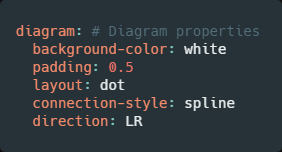
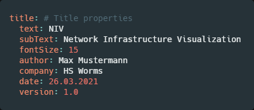
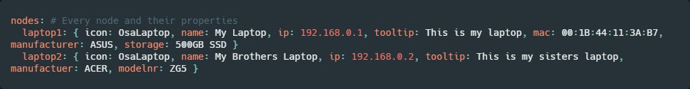
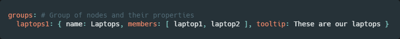
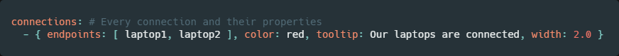

Documentation
This page contains all the useful information needed to create valid YAML files for using NIV (Network Infrastructure Visualizer) and understanding its config files.
There are 3 parts to this documentation. The first one is YAML Parameters for all the available YAML parameters to create the diagram. The second part is about the yaml_defaults file, which is about the file where you set your own defaults for the YAML file. The last part config is about the config file where you set up general settings about the program.
YAML Parameters
The table below describes the parameters used to create your diagram with a YAML file. The table gives the name of the parameter, the type of the parameter (string, double, etc.). Where applicable, the table also gives a default value for the parameter, a minimum value allowed for numeric parameters and certain restrictions on the use of the parameter
Note that parameter names are case-sensitive. This is usually true for parameter values as well, unless noted
The table is structured in five different sections for each object in the YAML. These sections are: diagram (general parameters of the diagram), title (parameters used to change the information under the diagram), nodes (parameters of each node), groups (parameters of each group), connections (parameters of each connection).
How to use the parameters of each section:
To instance the header, just write the name of the section with a colon(":"). For diagram and title heading you can use the parameters listed under each header with two whitespaces in front. For a better understanding, here are some examples on how these headers and their corresponding parameters can look like:
 Nodes, groups and connections are handled a little different, to instance them you have to declare it like before with a colon, but this time you input every parameter inside a brace with key-value pairs seperated by commas. Nodes and groups also need to have a unique name in front of the brace, which is used in groups and connections as well.
 Connections are a little special because you don't put a unique name in front of the braces, but a hyphen("-")
| Name | Type | Default | Minimum | Notes |
|---|---|---|---|---|
| diagram: | ||||
| background-color | color | transparent | ||
| padding | double | 0.5 | ||
| layout | string | "fdp" | ||
| connection-style | string | "spline" | only dot and fdp | |
| direction | direction | LR | ||
| title: | ||||
| text | string | "Diagram" | ||
| sub-text | string | "" | ||
| font-size | int | 15 | 1 | |
| author | string | "" | ||
| company | string | "" | ||
| date | string | todays date | ||
| version | double | 1.0 | ||
| nodes: | ||||
| icon | icon | |||
| name | string | "Node" | ||
| ip | ip | |||
| x | int | 0 | neato only | |
| y | int | 0 | neato only | |
| tooltip | string | "" | ||
| port-view | bool | False | ||
| ports | int | 24 | >0 | |
| mac | string | "" | ||
| modelnr | string | "" | ||
| manufacturer | string | "" | ||
| storage | string | "" | ||
| groups: | ||||
| name | string | "Group" | ||
| members | list | |||
| tooltip | string | "" | ||
| layout | string | |||
| rack | bool | False | ||
| connections: | ||||
| endpoints | list | |||
| ports | list | |||
| text | string | "" | ||
| color | color | #7B8894 | ||
| tooltip | string | "" | ||
| width | double | 1.0 | 0.1 | |
| showports | bool | False | ||
Parameter Descriptions
- background-color: color, default: "transparent"
-
A string in the xdot format specifying an arbitrary background.
If background is defined, the graphics operations described in the string are performed on the canvas
- padding: double, default: 0.5
-
Specifies how much, in inches, to extend the drawing area around the minimal area needed to draw the graph
- layout: string, default: "fdp"
-
Specifies the name of the layout algorithm to use: fdp, neato or dot.
dot and fdp for autogeneration, neato for a specified location
- connection-style: string, default: "spline", dot and fdp only
-
Controls how edges are represented
- "spline": edges are drawn as splines routed around nodes
- "line" edges are drawn as line segments
- none or "": no edges are drawn at all
- "curved": specifies edges should be drawn as curved arcs
- "ortho": specifies edges should be routed as polylines of axis-aligned segments
Note: when using "layout: neato" only ortho is used as a connection style
- direction: direction, default: "LR"
-
Sets directon of graph layout
For example, if direction="LR", the graph will go from left to right
By default, graphs are laid out from Left to Right - text: string, default: "Diagram"
-
Text displayed at the bottom of the Diagram
- sub_text: string, default: ""
-
Text displayed under "text", short information about the diagram
- font-size: int: default: 15, minimum: 1
-
Font size of all the text under th diagram, in points
- author: string, default: ""
-
Name of the author displayed under the Diagram
- company: string: default: ""
-
Name of the company displayed under the Diagram
- date: string: default: todays date
-
Date to display under the Diagram, per default todays date
- version: double: default: 1.0
-
Version number to display under the Diagram
- icon: icon: default: -
-
Icon to display in the node
Reference: icon catalog
- icon_name: string: default: "Node"
-
Name given to the specific node. Displayed under the node
- ip: ip: default: None
-
IP given to the specific node. Displayed under the node, if
--detailis set to 0 or 2 - x: int: default: 0, neato only
-
X-Coordinate where the node should be, if layout is set to neato
- y: int: default: 0, neato only
-
Y-Coordinate where the Node should be, if layout is set to neato
- tooltip: string: default: ""
-
Tooltip annotation attached to the node tooltip. Extra inforamtion or comments displayed in the tooltip
- port-view: bool: default: False
-
If set to True, shows the amount of ports given in ports, otherwise no ports are shown
- ports: int: default: 24, minimum: 0
-
Defines the number of ports shown when clicking on a group. Only shown if port-view is set to true
- mac: string: default: ""
-
Mac-Address to display in the node tooltip
- modelnr: string: default: ""
-
Model-number to display in the node tooltip
- manufacturer: string: default: ""
-
Manufacturer to sdisplayhow in the node tooltip
- storage: string: default: ""
-
Storage information to display in the node tooltip
- group_name: string: default: "Group"
-
Name of the group. Shown in the corner of the group
- members: list
-
List of nodes to show in a group
- group_tooltip: string: default: ""
-
Extra information or comments to display in the tooltip of the group
- group_layout: string
-
Layout to be used in a specific group
see also: layout
- rack: bool: default: False
-
If set to True, the group is oriented vertically to represent a rack
- endpoints: list
-
List of 2 nodes which should be connected
- connection_ports: list
-
List of ports (first number corresponds to first device in endpoints, second number to second endpoint)
- text: string: default: ""
-
Text shown next to the connection
- color: color
-
Color of the connection
- connection_tooltip: string: default: ""
-
Extra information or comments to display in the tooltip of the connection
- width: double: default: 1.0 minimum: 0.1
-
Thickness of the connection line
- showports: bool: default: False
-
If True: show ports next to given connection
Parameter Type Descriptions
- color
-
Colors can be specified using one of four formats:
" #000000"Red-Green-Blue as Hex(RGB) " #00000000"Red-Green-Blue-Alpha as Hex(RGBA) H,S,VHue-Saturation-Value (HSV) 0.0 <= H,S,V <=1.0 string color name The specification for the RGB and RGBA formats have the form “#RGB” or “#RGBA”, where R, G, B, and A each consist of 2 hexadecimal digits. HSV colors have the form of 3 numbers between 0 and 1, separated by whitespace or commas.
String-valued color specifications are case-insensitive
Examples:
Color RGB HSV String White "#ffffff" "0.000 0.000 1.000" "white" Black "#000000" "0.000 0.000 0.000" "black" Red "#ff0000" "0.000 1.000 1.000" "red" Turquoise "#40e0d0" "0.482 0.714 0.878" "turquoise" Sienna "#a0522d" "0.051 0.718 0.627" "sienna" The string value
transparentcan be used to indicate no color - direction
-
- "TB"
- "LR
- "BT
- "RL"
Graphs drawn from top to bottom, from left to right, from bottom to top, and from right to left, respectively
- icon
-
Choose an icon from the Icon Catalog
- ip
-
Valid IP formats are IPv4 and IPv6. Examples:
IPv4: 172.16.254.1
IPv6: 2001:0db8:85a3:0000:0000:8a2e:0370:7334
yaml_defaults.yaml
The yaml_defaults.yaml file is located at "~/.config/niv"(Linux) and "AppData/Roaming/niv"(Windows) and is created automatically when starting the program for the first time.
The file contains every parameter available in the YAML without a value. You can set every value so that it overrides the default value, if the corresponding value is not given in the YAML file.
Example:
If you set the parameter background-color to red
in yaml_defaults.yaml and don't have a value for it in the YAML,
it automatically uses the value from yaml_defaults.yaml.
config.yaml
The config.yaml file is located at "~/.config/niv"(Linux) and "AppData/Roaming/niv"(Windows) and is created automatically when starting the program for the first time.
Available options for our config.yaml file are:
| Name | Type |
|---|---|
| std_type | string |
| std_details | int |
| open_on_creation | bool |
- std_type
-
Sets the default output format of the diagram, if no explicit file format is given with
--save. Available formats:- ".svg"
- ".png"
- ".pdf"
- ".jpg"
- std_details
-
Sets the default detail value, if no explicit value is given with
--detail. Available values:- 0 (outputs diagrams with both detail levels)
- 1 (least detail)
- 2 (most detail)
- open_on_creation
-
Sets the default value if the diagram should automatically open after executing the console command. Available values:
- true (opens the diagram after executing the command)
- false (does not open the diagram after executing the command)